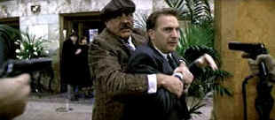

| Untouchables/B+,B+ |
| Paramount/1987/119/ANA
2.35 |
The bigger than life story of Elliot Ness's campaign to prosecute Chicago mob
boss Al Capone is perfect material for a larger than life treatment. Still, director Brian De
Palma's penchant for going over the top visually and stylistically crop up as potholes in his
otherwise well-constructed films. The Untouchables, thoroughly enjoyable from start to
finish, may fall into some De Palma created crevices, but overall it's one of the director's most
enjoyable films.
|
 |
| Don't mess with Ness. ©Paramount |
Elliot Ness arrives on the Chicago scene at the height of Capone's power.
Capone seems like an untouchable rather than Ness and his crew. Ness recruits a couple of local
cops and adds an FBI accountant to his team as they attempt to battle the endemic corruption of
Chicago. Challenging Capone and crew and cops with equal vigor, Ness and his merry men do their
best to clean up. Along the way Ness enlists the aid of a veteran Irish cop, a straight shooting
younger cop and an accountant that finds the way to nail Capone by firing a full salvo of paper.
Kevin Costner, often accused of a bland acting style makes an excellent
Elliot Ness. The man on the side of good against evil, armed with the force of innocence, is easy
picking for Costner. Sean Connery is outstanding in the chief supporting role as cop Jim Malone.
Connery adds needed brawn and savvy to the Ness crew. Of course, Robert De Niro chews the scenery
and his cigar with equal pleasure as the legendary mob strong man Capone.
Director De Palma has a crack crew at work on making The Untouchables
come to life. Ennio Morricone's pulsing score embellishes the slick camera movements of Stephen
Burum. Everything is a reflection of De Palma's style.
This no frills DVD looks very good in its widescreen anamorphic transfer.
The DVD has a consistent look in all lighting situations. A slight amount of edge enhancement
creeps into the picture in high transitions, but it's kept to a minimum. Colors are vital. Mostly,
images are sharp enough to reveal every De Palma detail. Morricone's score gets good treatment from
the Dolby Digital 5:1 tracks and gun fire is executed with good directionality.
|
|
|
|

Mother Night/A-/A-
The eccentric style of Nick Nolte is perfect for the angst ridden
Howard W. Campbell, Jr., a hero or a villain.


The American Widescreen Museum, is the ultimate resource for widescreen movie information, Martin
Hart's reliable site is a great tool for movie buffs.
Imaging Science Foundation
The Imaging Science Foundation promotes proper standards in home theater viewing. ISF trained
technicians offer monitor calibration services to consumers. The difference in a properly
calibrated monitor can be astounding. Click on the image to find an ISF member near you.
|